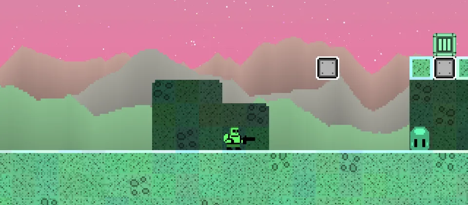

Short hops
Use small jumps when the gap is close.
LittleJS Platformer
A polished open-source platformer demo made with the LittleJS engine.
Play Platformer
Basics
Jumping
Use small jumps when the gap is close.
Hold jump longer for bigger gaps.
Landing near edges makes the next jump harder.